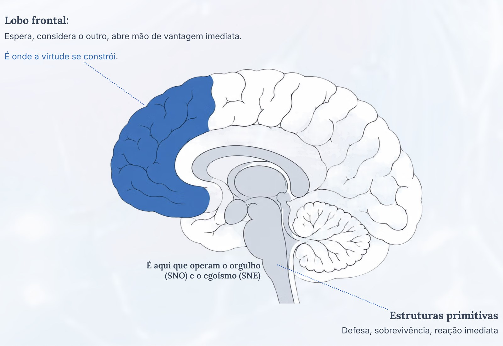

Virtologia · A Lei do Fluxo
Como a neuroplasticidade de virtudes muda fisicamente o cérebro e estrutura a saúde mental
A fórmula PRF = (I × E) × FA × PO × PS × LV mostra como cada pessoa enxerga o que acontece e como reage. Com ela dá para descobrir o que está travado na pessoa e como tratar aquilo.
Nesta aula tirada da Formação em Virtologia, uma entre mais de 60, Eduardo Casarotto apresenta a base do método: o que constrói o jeito de uma pessoa enxergar e reagir, e por que mudar isso não é questão de entender, e sim de mudar a estrutura do cérebro. E, principalmente, qual estrutura precisa ser construída.
O que esta aula apresenta
Com casos reais de tratamento de automutilação e pensamento suicida usando exercícios de virtudes, a aula percorre a base da Virtologia: de como o ser humano funciona até o plano de trabalho no consultório.
Ninguém reage ao mundo. A gente reage à própria memória.
Toda palavra, cena ou lembrança puxa junto um monte de coisas que a pessoa já viveu. A palavra "casamento" não chega sozinha: ela vem com o casamento dos pais, com o que deu errado antes, com o que ela ouviu a vida inteira sobre isso. No cérebro isso são redes neurais: grupos de neurônios que foram se ligando uns aos outros a cada experiência e que hoje disparam juntos. Por isso duas pessoas ouvem a mesma frase e sentem coisas opostas. E por isso explicar não muda: a explicação não chega até onde a rede está.
O que a Virtologia altera, e o que não tenta alterar
A memória não se reescreve. O que muda é como a pessoa a percebe e reage a ela. A aula mostra por que tentar dar um novo significado ao passado do paciente é, para a Virtologia, o erro mais comum do consultório.
A diferença entre se controlar e funcionar
Quem se segura por regra continua sentindo a mesma coisa. Só não age. A aula mostra como perceber, na fala do paciente, a diferença entre a virtude construída e a virtude de fachada, e por que o sintoma denuncia essa diferença mesmo quando a fala não denuncia.
A Lei do Fluxo: PRF = (I × E) × FA × PO × PS × LV
A fórmula com que a Virtologia lê uma pessoa inteira, letra por letra, e o que cada uma explica.
As necessidades humanas e o tanque
As 51 necessidades humanas não são gosto nem cultura, e vão mudando conforme o cérebro da pessoa se desenvolve. Cada uma tem uma reserva, que a Virtologia chama de tanque, e ela não pode secar nem transbordar. Os dois extremos geram sintoma, e é aí que boa parte da clínica confunde doença com necessidade em falta.
Aplicação em unidade prisional
O caso de uma interna que chegou ao programa se cortando e com tentativa de suicídio, e o que mudou depois de três virtudes trabalhadas com exercícios. Tem registro em vídeo e o relato do professor que conduziu o trabalho.
Como se monta um plano de trabalho
Três coisas apontando para o mesmo lado: em que ponto o cérebro da pessoa está, qual necessidade alimentar agora, e qual virtude construir junto. É o ponto em que a aula sai da teoria e entrega método.
A aula é corrida, e um assunto se apoia no outro.
O que adoece uma pessoa
O cérebro humano não é uma coisa só. Ele tem camadas que se formaram em momentos diferentes da evolução da espécie.
As estruturas primitivas existem há milhões de anos e são dedicadas à sobrevivência imediata: defender-se, garantir o próprio lugar, reagir antes de pensar. O lobo frontal, a parte da frente do cérebro, é a última que apareceu na história da espécie e a última que amadurece em cada pessoa. É ela que permite esperar, considerar o outro e abrir mão de uma vantagem imediata.
Num cérebro bem desenvolvido, a parte da frente coordena as primitivas. O adoecimento começa quando o sistema primitivo comanda e o resto passa a servi-lo.
A Virtologia identificou que esse comando primitivo se organiza em torno de duas coisas, e deu nome às duas: o sistema do orgulho, o SNO, que faz a pessoa viver defendendo o lugar dela na frente dos outros, e o sistema do egoísmo, o SNE, que faz tudo virar conta de quanto eu ganho com isso.
Quando eles mandam, a pessoa se defende. A defesa se repete, endurece e vira uma casca permanente, que a Virtologia chama de couraça. A couraça, vista de fora, é o que os manuais chamam de transtorno de personalidade.
Por isso o virtólogo não parte do sintoma. Diante de um padrão, ele não pergunta primeiro qual é o transtorno. Pergunta do que a pessoa se defende, e qual virtude falta para que ela não precise mais daquela defesa.
Condições que têm origem genética, como esquizofrenia, transtorno bipolar e autismo, não vêm daí, e a Virtologia não diz o contrário. Qualquer pessoa, com ou sem essas condições, também pode estar com o cérebro no modo primitivo. E nessa parte o trabalho ajuda igual, sempre junto com o cuidado médico.

Por que virtudes, e não qualquer neuroplasticidade
Neuroplasticidade é a capacidade que o cérebro tem de mudar com o que a pessoa repete. E ela não escolhe lado: constrói tanto o que faz bem quanto o que adoece. O cérebro aprende a desconfiar de todo mundo com a mesma facilidade com que aprende qualquer outra coisa. Saber que o cérebro muda não diz nada sobre para onde ele deveria mudar.
Se o que adoece é o comando primitivo, o que precisa ser construído é o que o desmonta. É aí que a Virtologia responde a pergunta que quase ninguém fez: construir o quê?
A resposta é o que dá nome à escola. Virtude, aqui, não é valor moral nem discurso bonito. É um grupo de ideias que, treinado com exercícios específicos, constrói caminho novo no cérebro. Humildade, aceitação, perdão e abnegação deixam de ser coisas que a pessoa tenta fazer e passam a ser o jeito como ela funciona sem pensar.
Não é segurar o orgulho e o egoísmo com força. Quem segura continua sentindo a mesma coisa, só não age. É diminuir o peso que o próprio cérebro dá a eles, até que a resposta orgulhosa ou egoísta simplesmente pare de vir.
Quem se controla ainda sente. Quem construiu a estrutura já não sente.
Junto com os caminhos, muda a química. A dopamina, que é o mensageiro do prazer e da recompensa, passa a se ligar mais ao vínculo verdadeiro e menos ao status. A serotonina, ligada ao controle dos impulsos, sustenta melhor a pausa antes da reação. O cortisol, o hormônio do estresse, deixa de manter o corpo em estado de defesa permanente. E a oxitocina, ligada ao vínculo, sustenta as relações.
Isso acontece porque mente, sistema nervoso, hormônios e sistema de defesa do corpo não são coisas separadas. Funcionam como uma rede só. Treinar virtude é, ao mesmo tempo, treinar essa rede inteira.
Daí vem a ideia central da Virtologia: a saúde mental é o que se estabelece quando um cérebro deixa de funcionar a serviço do próprio orgulho e egoísmo. Ansiedade, depressão, compulsão e relações que adoecem não são tratadas apesar disso. São tratadas por causa disso.
Não se pula degrau
Falta a peça que impede tudo isso de virar conselho de autoajuda.
Não se constrói qualquer virtude em qualquer pessoa. Existe uma sequência, e ela não pode ser pulada. Cobrar de alguém uma maturidade que o cérebro dele ainda não sustenta não acelera nada. Só gera frustração, e nada fica gravado.
As faixas de evolução descrevem em que regime o cérebro está operando, e é a leitura da faixa que diz qual é o próximo degrau possível e qual virtude o abre. É isso que separa método de conselho, e é o que a aula mostra no plano de trabalho.
Faixa não mede o valor de ninguém. Ela descreve como o cérebro está funcionando, muda de área para área, e pode subir e descer.
Sobre o que a Virtologia afirma
As partes do cérebro envolvidas e o que cada uma faz já são descritas pela neurociência. O que a Virtologia acrescenta é a organização dessas funções em dois sistemas, o do orgulho e o do egoísmo. É proposta original da escola, formulada de um jeito que pode ser testada e verificada em exame de imagem.
Quem conduz a aula

Eduardo Casarotto é pesquisador independente, fundador do Instituto Virtudes e fundamentador da Virtologia, escola brasileira dedicada a estudar como o ser humano funciona e a desenvolver virtudes usando a capacidade do cérebro de mudar.
Há mais de duas décadas pesquisa personalidade, comportamento e desenvolvimento humano, sendo autor de mais de 20 livros e de artigos científicos publicados em revistas científicas.
O trabalho dele já chegou a universidades, consultórios, órgãos públicos e instituições, com metodologias apresentadas no Senado Federal e aplicações em consultórios, educação, organizações e unidades prisionais.
Profissionais de outras escolas, e o que as fez ficar
“Não tem como não falar que é revolucionário. Depois que você conhece, não tem como não trabalhar com isso.” Carina · Neuropsicopedagoga, psicanalista e terapeuta ABA
“É libertador. Para consultório, foi uma revolução e tanto.” Fernanda · Psicóloga clínica (TCC)
“A Virtologia é o ‘como’ de todas as terapias. Linguagem fácil, compreensível, onde qualquer um pode fazer.” Grace Campos · Psicanalista
“Quando você vai percebendo, você vê que aquela não é mais a mesma pessoa que comecei a atender.” Dinorá · Psicóloga especialista em autismo
“Quando você vê, você já está agindo. Muito mais rápido e pontual do que outras terapias.” Rosa · Psicóloga
“Melhorou o pânico e a ansiedade da minha paciente em apenas 14 dias.” Dâmaris · Psicóloga clínica
Como se tornar um especialista em Virtologia
Estudar Virtologia você já está fazendo agora. A Formação é outra coisa: é o caminho de quem vai dominar o método inteiro e aplicar com segurança, no consultório ou dentro de uma instituição.
São mais de 60 aulas com a profundidade desta, do fundamento à técnica. E junto com elas, acompanhamento de verdade: supervisões, orientação e correção de rota do começo ao fim. Não é conteúdo para assistir sozinho. É formação conduzida por quem já aplica.
O programa, o formato e os valores são apresentados em conversa pelo WhatsApp:
Saber mais sobre a Formação em VirtologiaPara quem prefere examinar a tese antes, o livro Fundamentos da Virtologia reúne a base inteira da escola. Muitos dos que hoje estudam na Formação chegaram por ele.
O que costumam perguntar
Isso é uma coisa científica?
A Virtologia se define como escola clínico-filosófica com base científica. Ela formula o que afirma de um jeito que pode ser testado, dizendo o que confirmaria e o que derrubaria cada hipótese, dialoga com a neurociência e publica artigos em revistas científicas. Os casos mostrados na aula são registros de aplicação real, documentados em vídeo, e a escola apresenta eles como sendo isso.
As virtudes são uma proposta moral?
Não. Na Virtologia, virtude é uma capacidade construída no cérebro, não um valor para a pessoa adotar. O que se avalia não é se alguém concorda com uma ideia, e sim se o cérebro dele passou a funcionar de outro jeito. E isso aparece no sintoma, não no discurso.
A Virtologia substitui acompanhamento médico?
Onde existe determinação biológica, como na psicose, no transtorno bipolar e no autismo, o trabalho é somado ao tratamento médico e nunca fica no lugar dele. Onde o sofrimento vem de defesa construída ao longo da vida, o trabalho virtológico é o próprio tratamento.
Como funciona a Formação em Virtologia?
São mais de 60 aulas, do fundamento à técnica, com acompanhamento e supervisões ao longo de todo o caminho. Programa, formato e valores são apresentados na conversa pelo WhatsApp, sem compromisso.